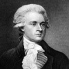

Amerika Birleşik Devletleri’nin en önemli “kurucu babalar”ından (founding fathers) olan Thomas Jefferson (1743-1826), “Bağımsızlık Deklarasyonu”nun yazarıdır. ABD’nin üçüncü başkanı olmuştur. Onun başkanlığı sırasında ABD, Lousiana’yı Fransa’dan satın almış ve böylece genç ulusun coğrafi büyüklüğü iki katına çıkmıştır.

Jefferson Virjinya’daki Shadwell kırsalında doğmuştu. Toprak sahibi zengin bir ailenin çocuğuydu. Virjinya aristokrasisinin çocuklarını gönderdiği William and Mary Koleji’nden 1762 yılında mezun oldu. On dört yaşındayken babası ölünce malların idaresini eline aldı. 1770 yılında ünlü Monticello Malikanesi’ni tasarladı ve inşa etti.
John Locke (1632–1704) ve Voltaire (1694–1778) gibi Aydınlanma Çağı filozoflarının düşüncelerinden etkilenen Jefferson, henüz yirmili yaşlarındayken politikaya atıldı. 1769 yılında Virjinya Meclisi’ne seçildi. Mecliste, İngiliz vergi politikalarını eleştirenlerin safında yer aldı. On üç koloninin de kendi kendini yönetmeye hakkı olduğunu savundu.
Jefferson 1775 yılındaki ikinci Anayurt Kongresi’nde delegeydi. Sonraki yaz, “Bağımsızlık Deklarasyonu”nu yazmak için görevlendirilen komiteye seçildi. Locke’un fikirlerine dayanarak vatanseverlerin neden krala isyan ettiğini açıkladı. Görüşlerini son derece dokunaklı bir dille ifade ediyordu: “Bütün insanlar eşit yaratılmıştır. Her biri, kendisine Tanrı tarafından bahşedilen devredilemez haklara sahiptir. Yaşam, özgürlük ve mutluluğa ulaşma hakkı bunların arasında yer almaktadır.”
Devrimden sonra Fransa’ya elçi olarak atandı. ABD’nin ilk dışişleri bakanı oldu. 1796 yılında başkan yardımcısı seçildi. John Adams’ı (1735-1826) ve üçüncü bir aday olan Aaron Burr’u (1756-1836) ilk ciddi başkanlık seçiminde yenilgiye uğrattı (1800).
Jefferson’un başkan olduğu döneme, Lousiana bölgesinin alınması damgasını vurdu. Ayrıca Akdeniz’de korsanlara karşı ciddi bir savaş verildi. Başarıya ulaşamasa da Napolyon Savaşları (1799-1815) sırasında Amerikan gemilerinin İngiliz saldırılarından korunması için uğraşıldı. Jefferson’un İngilizleri cezalandırmak için imzaladığı İngiliz ürünlerinin Amerika’ya girişini kısıtlayan 1807 tarihli Ambargo Yasası, aksine Amerikan çiftçi ve tüccarlarına, özellikle de New England’da zarar verdi. Bu durum son görev yılında Jefferson’un popülerliğinin azalmasına neden oldu.
Başkanlığı bıraktıktan sonra, ömrünün kalan kısmını Monticello’da geçirdi. 1819 yılında Virjinya Üniversitesi’ni kurdu. 4 Temmuz 1826‘da, yani Amerikan Bağımsızlık Günü’nün 15. yıldönümünde hayata gözlerini yumdu.
Ek Bilgiler
1- Jefferson, Kongre Kütüphanesi’nin yenilenmesi için 1815 yılında kendi özel kütüphanesinde bulunan 6487 kitabı federal hükümete sattı. Kütüphane, 1812 yılında savaşta hasar görmüştü.
2- Virjinya Üniversitesi ABD’de kurulan ilk seküler kolejdir.
3- Jefferson 2 dolarlık Amerikan banknotunun önyüzünde resmedilmektedir.